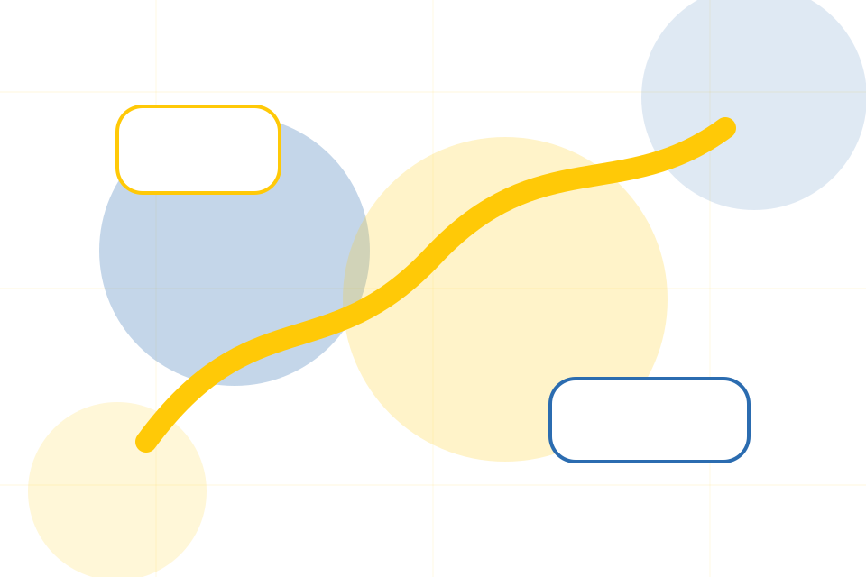
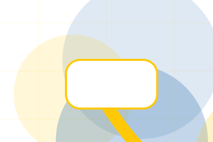
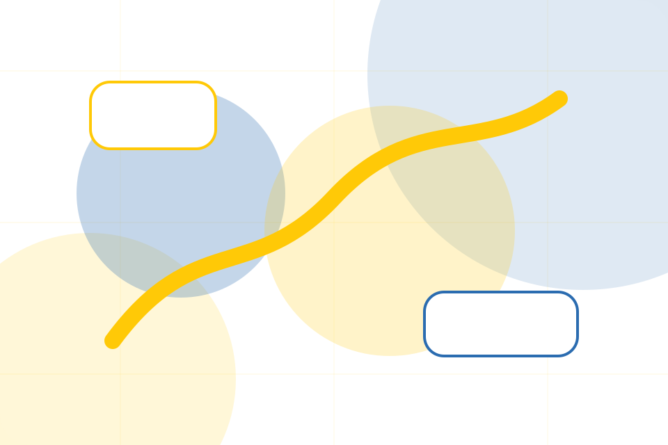
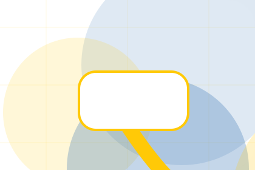
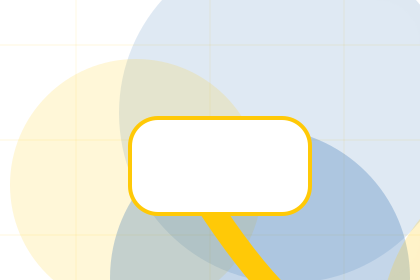
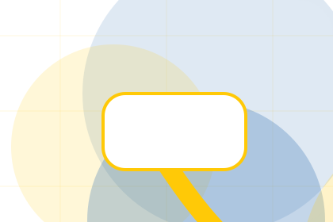
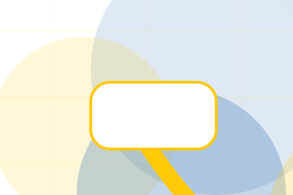
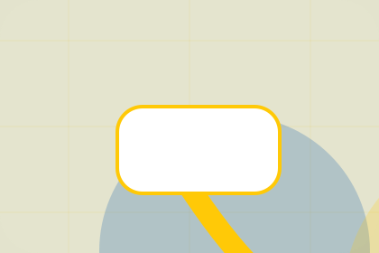

Contact / 01
Contact by Good
Contact shaped for nonprofit, charity & social impact decisions.
Contact opens as a clear nonprofit decision hub: what Good offers, who it helps, why it matters, and which route to take first.
The first screen combines positioning, proof, primary action, and fast internal navigation, so people can act immediately or compare the rest of the contact route with context.
Nonprofit scopeCompare optionsRequest advice
Yellow impact hero
Choose an impact route
Select the closest route and Good keeps the next step, proof, and follow-up expectation aligned with trust and contribution.

Contact / 03
Send the right details
Volunteer makes the contact path concrete: what to send, how the response works, and what Good needs before visitors donate today.
The section reduces contact friction by naming the channel, expected detail, privacy path, and response expectation instead of dropping visitors into a generic form.
Donate TodayDetails
What information helps Good respond with a useful answer instead of a generic reply.
Timing
How the visitor should think about response, urgency, location, or availability.

Reply
The expected next message keeps scope, timing, and the first practical step clear.
Contact / 04
Partner as proof
Partner gives the proof layer for contact: standards, evidence, and reassurance that make the next decision feel grounded.
Instead of relying on vague claims, Good presents visible standards, process cues, and proof artifacts that help nonprofit visitors judge fit.
Donate TodayVisible proof that helps visitors believe the claims behind partner.
The quality, safety, or operating expectation this section makes explicit.
What becomes clearer before someone decides whether to donate today.
Contact / 05
Send the right details
Media makes the contact path concrete: what to send, how the response works, and what Good needs before visitors donate today.
The section reduces contact friction by naming the channel, expected detail, privacy path, and response expectation instead of dropping visitors into a generic form.
Donate Today- 01
Details
What information helps Good respond with a useful answer instead of a generic reply.
- 02
Timing
How the visitor should think about response, urgency, location, or availability.
- 03
Reply
The expected next message keeps scope, timing, and the first practical step clear.
Yellow impact hero
Choose an impact route
Select the closest route and Good keeps the next step, proof, and follow-up expectation aligned with trust and contribution.
Contact / 06
Send the right details
Form makes the contact path concrete: what to send, how the response works, and what Good needs before visitors donate today.
The section reduces contact friction by naming the channel, expected detail, privacy path, and response expectation instead of dropping visitors into a generic form.
Donate TodayGood keeps form practical: send the key details, choose the right contact route, and know what kind of reply to expect.
Donate Today
Contact / 07
Send the right details
Response makes the contact path concrete: what to send, how the response works, and what Good needs before visitors donate today.
The section reduces contact friction by naming the channel, expected detail, privacy path, and response expectation instead of dropping visitors into a generic form.
Donate Today

Details
What information helps Good respond with a useful answer instead of a generic reply.
Contact / 08
Send the right details
Details makes the contact path concrete: what to send, how the response works, and what Good needs before visitors donate today.
The section reduces contact friction by naming the channel, expected detail, privacy path, and response expectation instead of dropping visitors into a generic form.
Donate TodayDetails
What information helps Good respond with a useful answer instead of a generic reply.

Timing
How the visitor should think about response, urgency, location, or availability.

Reply
The expected next message keeps scope, timing, and the first practical step clear.
Contact / 09
Send the right details
Submit makes the contact path concrete: what to send, how the response works, and what Good needs before visitors donate today.
The section reduces contact friction by naming the channel, expected detail, privacy path, and response expectation instead of dropping visitors into a generic form.
Donate TodayWhat information helps Good respond with a useful answer instead of a generic reply.
How the visitor should think about response, urgency, location, or availability.
The expected next message keeps scope, timing, and the first practical step clear.
Contact / 10
Donate Today
Good closes the contact route with a clear action, a quick reminder of the value, and a low-friction way to donate today.
Visitors who are ready can use the primary action. Visitors who are still comparing can scan the section links, proof, and support routes before they donate today.
Donate TodayThe final block keeps the choice simple: act now, compare one more proof route, or send enough detail for a focused response.
Donate Todaytrust and contribution
Donate Today
A donor site with bold yellow impact modules, transparent metrics, story cards, and donation selector. Contact ends with a direct path to donate today, plus enough context for visitors who still need to compare.

Donate TodayImportant notes before you act
Donation use statements must match governance records, reporting, and local fundraising rules.